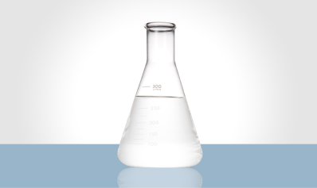

SODIUM BISULFITE

Sodium bisulphite or sodium hydrogen sulphite, whose formula is NaHSO3, is an inorganic salt solution. It is a moderately reducing agent and can release sulphur dioxide when it comes into contact with air. When disposed of incorrectly, i.e. in the environment without neutralization, it can contaminate soil, water and even living beings.
This element has several functions, among which we can highlight its use in the treatment of drinking water by removing excess chlorine and in corrosion control by eliminating the dissolved oxygen present in water lines, in the oil extraction industry bisulphite is used in well drilling as an oxygen ‘holder’, in the food industry it works as a preservative, antimicrobial and antioxidant. It can also be used as a bleach in the paper industry, in cooling systems and to remove metals from liquid industrial waste.
In the Reverse Osmosis SKID process shown below, dosing pumps were used which are controlled by an analog signal (4 to 20 mA) generated proportionally (PID) to the flow rate requested by the system. In this way, the SKID will have a more precise dosage of sodium bisulfite.
In order to guarantee the dosage of the SKID and the efficient operation of the pumps, a control logic was developed which monitors and controls the operational availability and operating hours of each dosing pump.
"This element has several functions, among which we can highlight its use in the treatment of drinking water by removing excess chlorine and in corrosion control by eliminating dissolved oxygen"